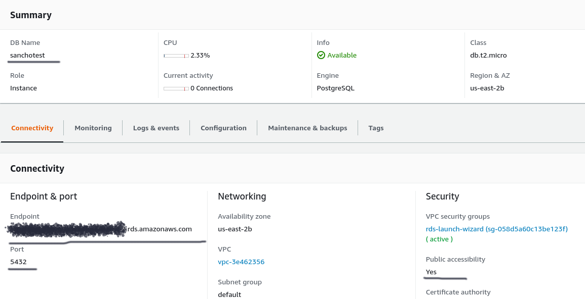
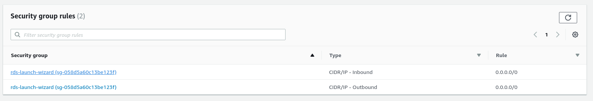
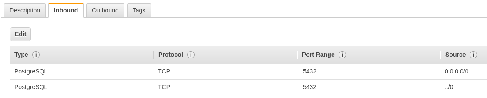
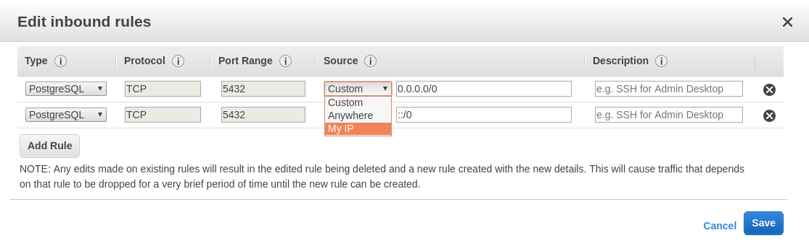
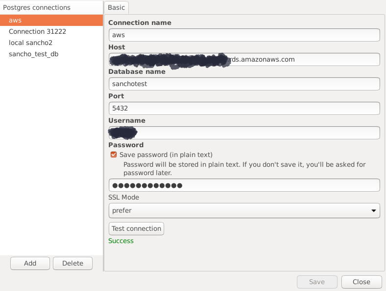

SanchoSQL can be used with a Postgres instance running on AWS (Amazon RDS). Here's how to do it.
When creating a new instance, note username and password.
If you already have one, go to the dashboard.
You should see something similar to this:

Take note of DB Name, Endpoint, Port, and Public accessibility (should be set Yes)
Warning! The following example will enable establishing connections from all over the Internet. Before doing this, consider your use case and make sure it's safe!
Go to security group rules settings and click on the Inbound entry.

Then, check the Inbound tab. The settings below enable access from anywhere, so be careful!

You can also click Edit and alter the configuration so that only connections from your IP will be accepted:

After that, we can configure the connection in SanchoSQL!
Open SanchoSQL
Select Connections (shortcut Control-N) option from the menu (File -> Connections)
Click Add button in the next window to create a new connection.

Now, you need to fill in the connection details:
Connection name - name that describes this connection
Host - corresponds to Endpoint from the AWS dashboard
Database name - DB Name from the AWS dashboard
Port - 5432 by default
Username - you've set it when you have created new database
Password - you've set it when you have created new database
When you set all fields - you can click on the Test connection button to check if a connection can be established successfully. If you see Success - congratulations! It works as expected!